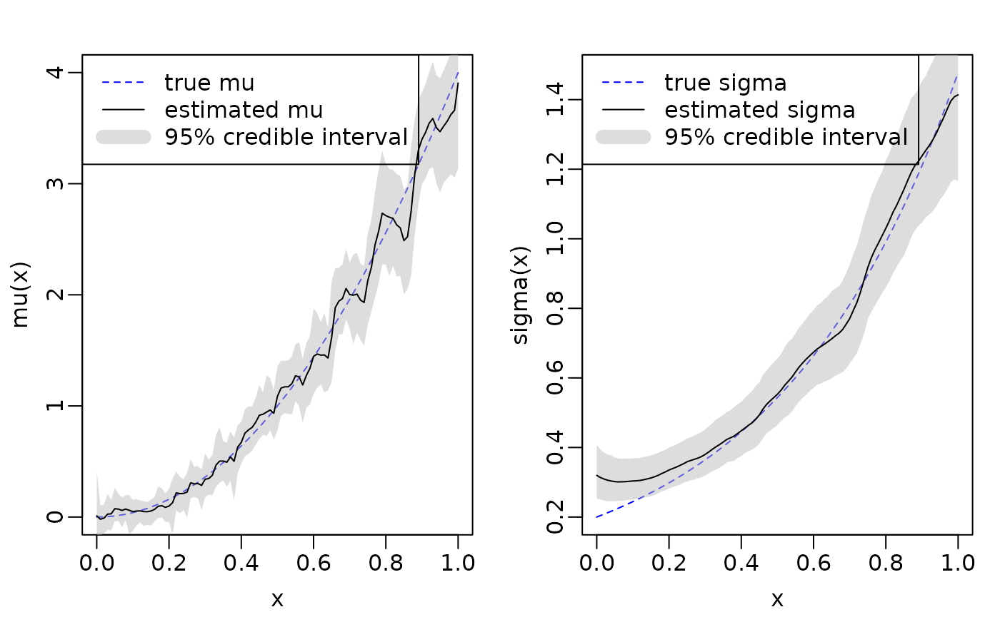

Fitting heteroskedastic models with flexBART
Source:vignettes/articles/heteroskedastic_model.Rmd
heteroskedastic_model.RmdOverview
flexBART now supports fitting heteroskedastic models
with Bayesian ensembles of regression trees. Specifically, it can be
used to fit models of the form \[
Y \sim \mathcal{N}(\mu(x), \sigma(x)^2)
\] where both \(\mu(X)\) and
\(v(x)\) are approximated with an
ensemble of regression trees. flexBART allows the size
(specified using the optional argument M_vec or
M), the tree prior hyperparameters (specified using the
optional arguments alpha_vec and beta_vec),
and the variables used for splitting (specified via the
formula argument) to vary in each ensemble.
Example
We first demonstrate flexBART’s functionality using data generated from the model \(Y \sim \mathcal{N}(\mu(x), \sigma(x)^2)\) where \(X\) contains a single continuous covariate.
We generate \(n = 1000\) training observations and \(n = 101\) testing observations.
set.seed(727)
n_train <- 1000
n_test <- 101
n_tot <- n_train + n_test
X = runif(n_tot)
X[(n_train + 1):n_tot] <- seq(0, 1, by = 0.01) # set the test points so we can plot the estimated function
Z = rnorm(n_tot)
mu = 4 * X^2
sigma = 0.2 * exp(2 * X)
Y = mu + sigma * Z
df = data.frame(Y, X)
train_data = df[1:n_train,]
test_data = data.frame(X = df[-c(1:n_train), colnames(df) != "Y"])We’re now ready to fit our model.
set.seed(101)
fit = flexBART::flexBART(Y ~ bart(.) + sigma(.),
train_data = train_data,
test_data = test_data
)flexBART::flexBART returns the posterior mean estimate
and posterior samples for \(\mu(x)\)
(outputs named yhat) and \(\sigma(x)\) (outputs named
sigma). We plot the true underlying \(\mu(x)\) and \(\sigma(x)\) functions along with the mean
and 95% credible intervals estimated by
flexBART::flexBART.
mu_l95 <- apply(fit$yhat.test, MARGIN = 2, FUN = quantile, probs = 0.025)
mu_u95 <- apply(fit$yhat.test, MARGIN = 2, FUN = quantile, probs = 0.975)
sigma_l95 <- apply(fit$sigma.test, MARGIN = 2, FUN = quantile, probs = 0.025)
sigma_u95 <- apply(fit$sigma.test, MARGIN = 2, FUN = quantile, probs = 0.975)
par(mar = c(3,3,2,1), mgp = c(1.8, 0.5, 0), mfrow = c(1,2))
plot(0, type = "n", xlim = c(0, 1), ylim = range(mu), xlab = "x", ylab = "mu(x)")
lines(test_data$X, mu[-c(1:n_train)], lty = "dashed", col = "blue")
polygon(x = c(test_data$X, rev(test_data$X)), y = c(mu_l95, rev(mu_u95)), col = scales::alpha("grey", alpha = 0.5), border = FALSE)
lines(test_data$X, fit$yhat.test.mean)
legend("topleft", legend = c("true mu", "estimated mu", "95% credible interval"), col = c("blue", "black", scales::alpha("grey", alpha = 0.5)), lty = c("dashed", "solid", "solid"), lwd = c(1, 1, 10))
plot(0, type = "n", xlim = c(0, 1), ylim = range(sigma), xlab = "x", ylab = "sigma(x)")
lines(test_data$X, sigma[-c(1:n_train)], lty = "dashed", col = "blue")
polygon(x = c(test_data$X, rev(test_data$X)), y = c(sigma_l95, rev(sigma_u95)), col = scales::alpha("grey", alpha = 0.5), border = FALSE)
lines(test_data$X, fit$sigma.test.mean)
legend("topleft", legend = c("true sigma", "estimated sigma", "95% credible interval"), col = c("blue", "black", scales::alpha("grey", alpha = 0.5)), lty = c("dashed", "solid", "solid"), lwd = c(1, 1, 10))